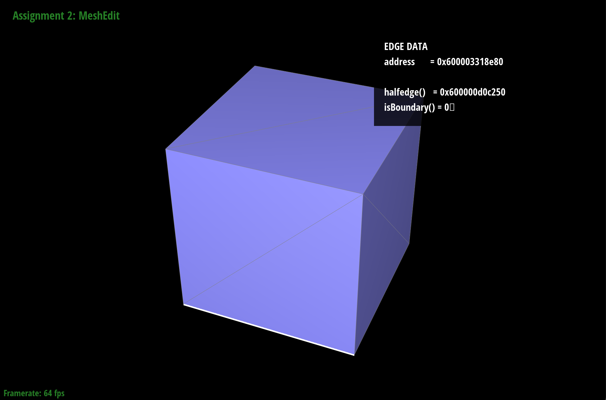
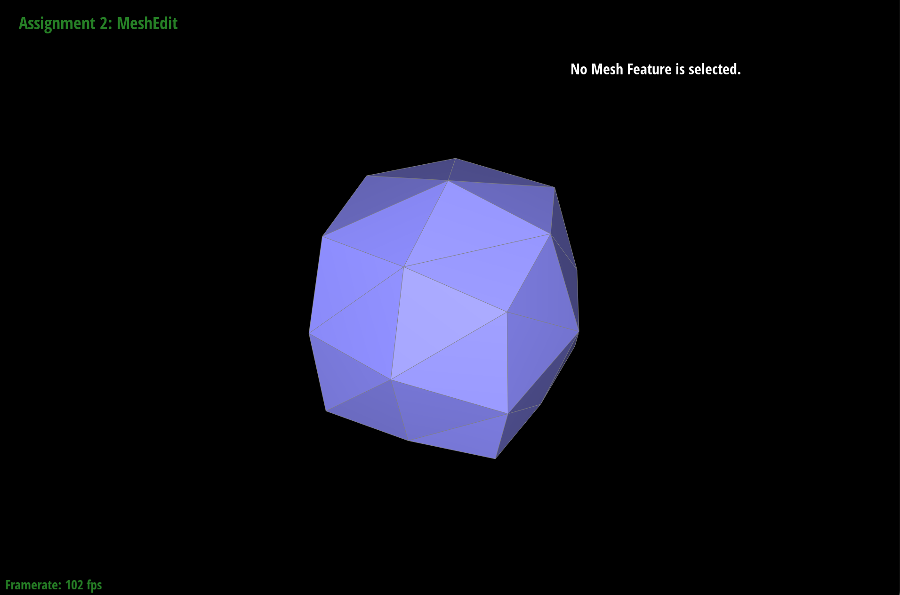
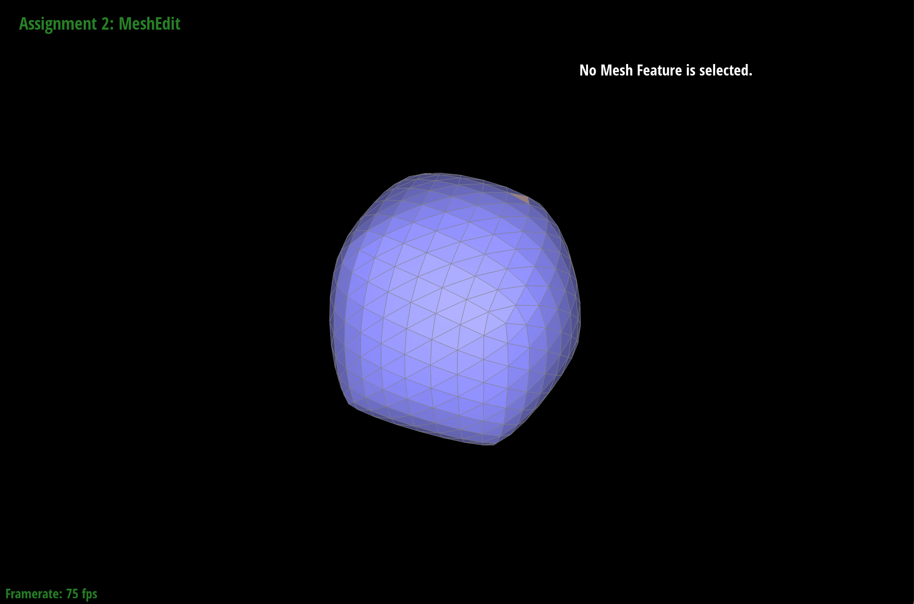
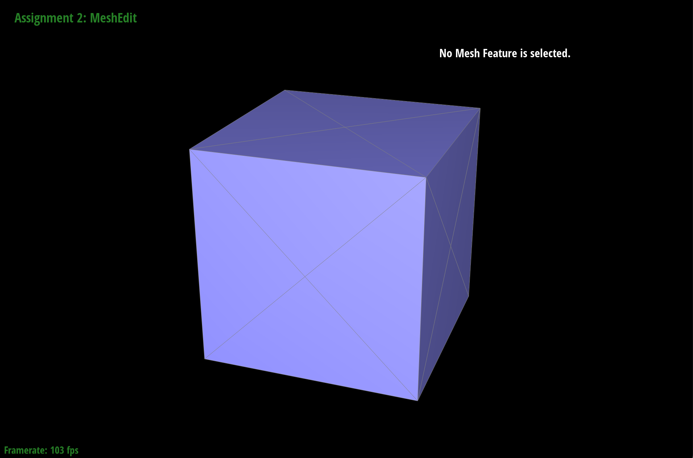
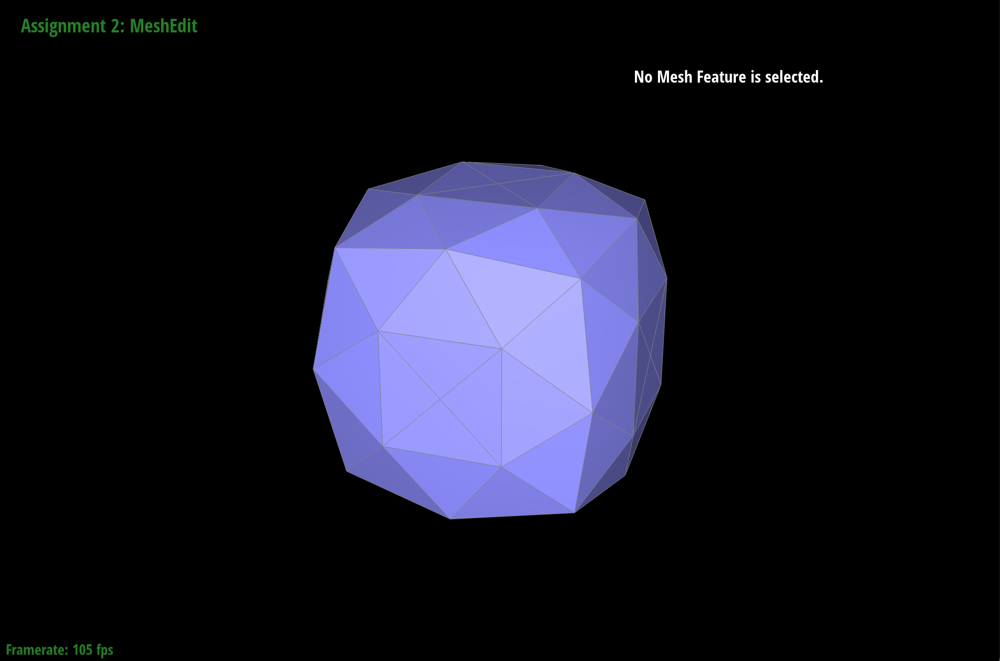
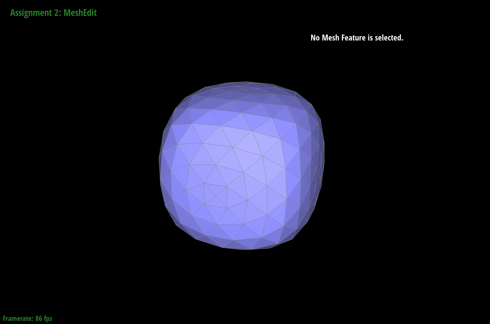

CS184/284A Spring 2025 Homework 2 Write-Up
Names: Gabriel Raulet
Link to webpage:
https://cal-cs184-student.github.io/hw-webpages-gabeh98_team/hw2/index.html
Link to GitHub repository:
https://github.com/cal-cs184-student/sp25-hw2-gabeh98
Section I: Bezier Curves and Surfaces
Part 1: Bezier curves with 1D de Casteljau subdivision
De Casteljau's algorithm is an algorithm that recursively computes Bezier curves. For example, suppose are trying to evaluate the points of a cubic Bezier
curve. This requires 4 ordered metric points as input. Given a real-valued parameter t in the range between 0 and 1 inclusive, we compute 3 linearly interpolated points
lying between each pair of adjacent points. We then recursively apply the same procedure (with the same parameter t) to these 3 points to obtain 2
points. Once we have one point left, this point lies somewhere on the cubic Bezier curve. By varying the parameter t from 0 to 1, we sweep out the
entire Bezier curve. The implementation is therefore straightforward. We are given n points as input, and we linearly interpolate using the parameter t
between adjacent points, creating n-1 points as ouptut. Repeat this process until there is 1 point left.
Part 2: Bezier surfaces with separable 1D de Casteljau
De Casteljau's algorithm extends to Bezier surfaces in a natural way. Instead of an array of points, we are
given a 2D n-by-n matrix. Instead of a single parameter t, we are given two parameters, u and v. For a given u, we
we compute a column array of n points using de Casteljau's algorithm to interpolate each row (treating each row as
a Bezier curve). For a given v, we compute the final interpolated surface point using de Casteljau's algorithm to
interpolate the column array. This method enables us to compute the corresponding Bezier surface point for every parameterized
point in the unit square.
Section II: Triangle Meshes and Half-Edge Data Structure
Part 3: Area-weighted vertex normals
To compute area-weighted normals for a given vertex, we need to go through all the non-boundary triangle faces incident to that vertex,
compute the area of the triangle and weight the normal vector of the face by the area. We sum all these weighted normal vectors up
and then renormalize so that they have unit length. We do this using the halfedge data structure as follows. Start from an arbitrary
half edge incident to the given vertex. We keep track of this halfedge so that we know when to stop iterating over faces. We compute the
area of the face by taking the cross product of the two face edges incident to the given vertex, and dividing by two. To get the neighboring
face, we need to get the next halfedge whose corresponding edge is incident to the given vertex. Taking the twin halfedge of the current
half edge gives us a halfedge on the neighboring face, but to ensure that we don't accidentally jump back to the previous face and prematurely
exiting the loop, we need to to take the next halfedge of this twin. This halfedge is associated with the input vertex and so we are good to go.
Part 4: Edge flip
In order to implement the edge flip operation I used the extremely helpful HalfedgeEdgeOpImplementationGuide.pdf provided by the course instructors.
This guide significantly improved my understanding of this homework for this part and the remaining two parts. Essentially I used the same mesh
identifiers provided in their picture and filled in the missing operations. I managed to get it working very quickly with no debugging trouble (part 5
was only slightly more difficult). I went through each halfedge one-by-one and adjust all the pointers to point to the correct mesh elements by
following the picture of the flipped edge.
Part 5: Edge split
Implementing the edge split operation was more tedious than the edge flip, but was ultimately smooth sailing after I began to feel comfortable with the
halfedge structure during part 4. I drew out my own picture for the edge split, keeping as many of the mesh elements with the same ids as from part 4
as possible. The only difficulty here was coming up with my own drawing, as I used the course provided diagram for part 4. I later had to update one
line of this function so that the halfedge selection in part 6 for the newly introduced midpoint vertex was associated with one of the new edges, but
this was a minor change.
Part 6: Loop subdivision for mesh upsampling
Part 6 was more difficult to get right. I think I understood the goal pretty quickly but it was much harder to implement correctly.
I closely followed the 5 steps reccomended in the starter code and homework description. Steps 1 and 2 were simple to implement after
the learning experience from part 4 and part 5. I followed the provided diagram and computed the new and old vertex positions for the
eventual loop subdivision. Step 3 was simple at first. I simply checked which edges had old vertices, split them, updated the position
of the new midpoint vertex, and set the new midpoint vertex to be new. the results looked right. When I got to step 4, I had the right logic
but the results did not look right. I eventually realized that I was flipping incorrect edges. So I had to go back to step 3 and adjust
which edges I was setting to be new (namely, those incident to the new midpoint edge and NOT overlapping with the old longer edge that
was split). To do this correctly, I went back to my edge split code and made sure that the new vertex's associated halfedge was one
of the non-overlapping edges. It was then a simple matter to use the halfedge structure to compute the opposite edge that needed to be
flipped. After I finished those two changes, I only had to update the new vertex positions to get the desired result.
|

|

|

|
|

|

|

|
|
|
|
As you can see in the top three images, applying subdivision plainly to the cube produces uneven protrusions on some of the corners. These
are occuring because the cube triangles are unevenly split along the faces of the cube. In order to get a symmetric smooth subdivided cube,
I split all edges so that each face had one vertex in the center and 4 similar right triangles. The next 5 images show that the subdivision
becomes much smoother.